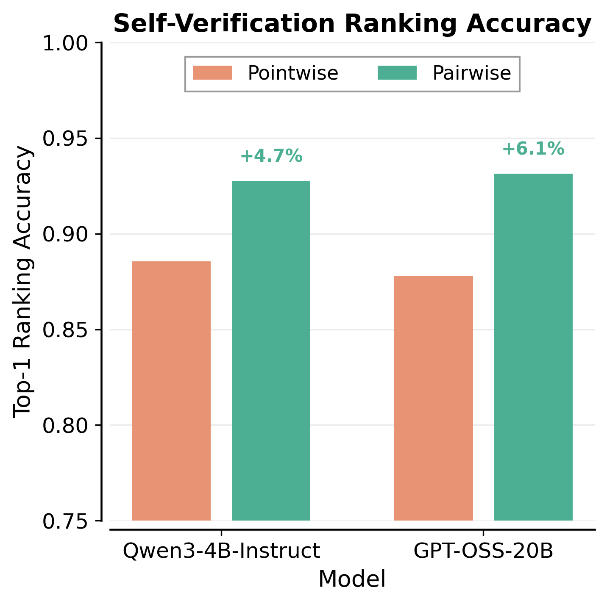
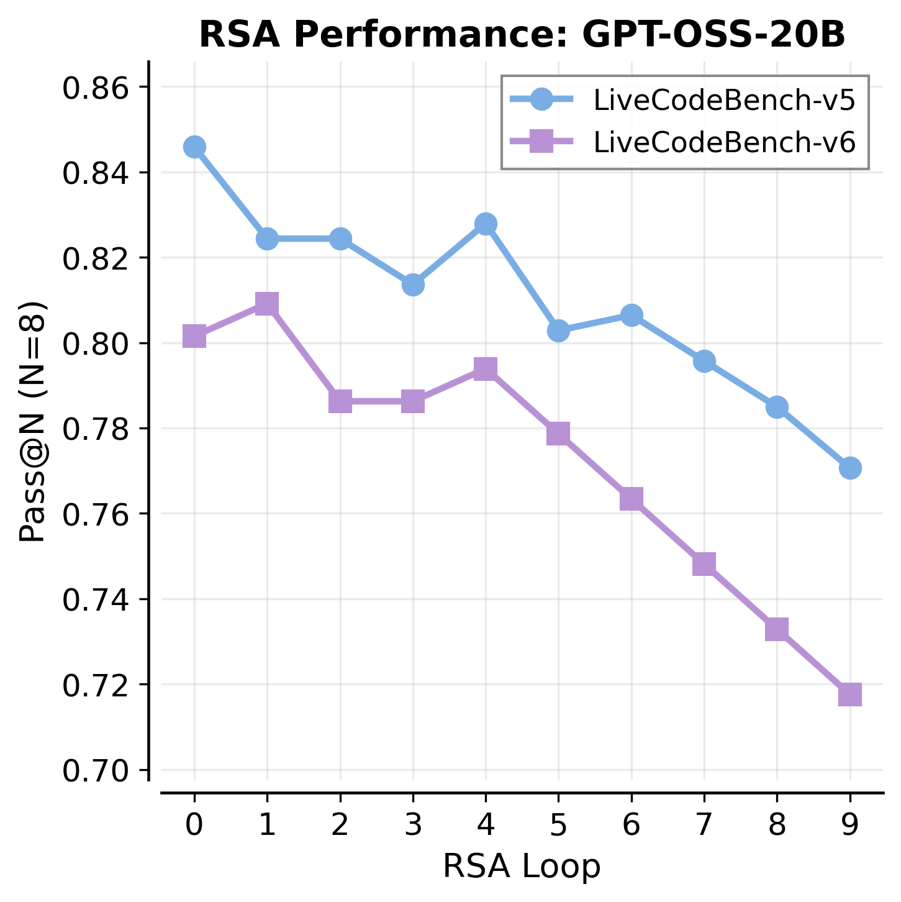
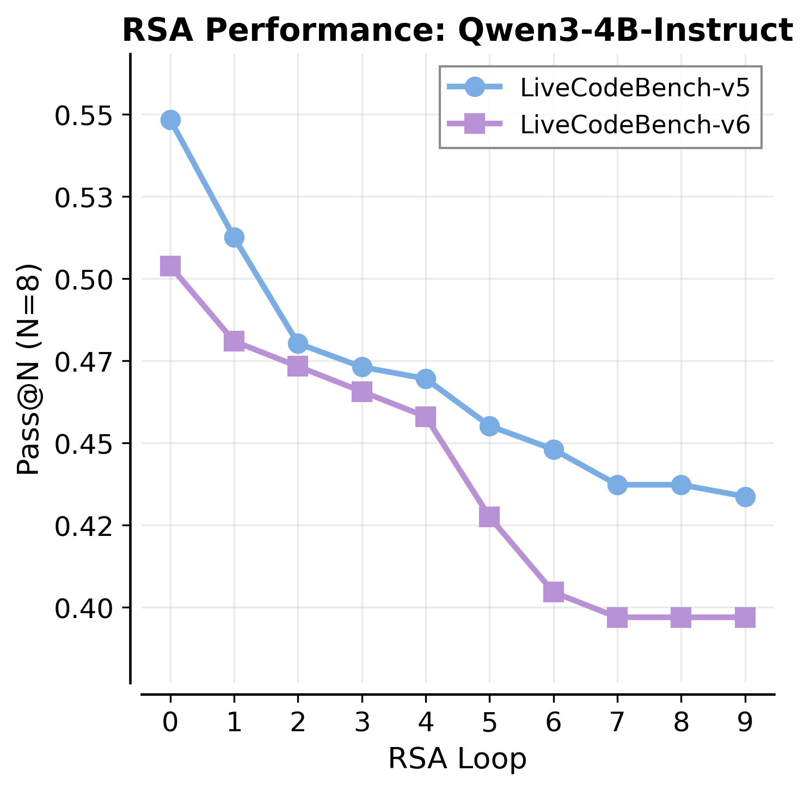
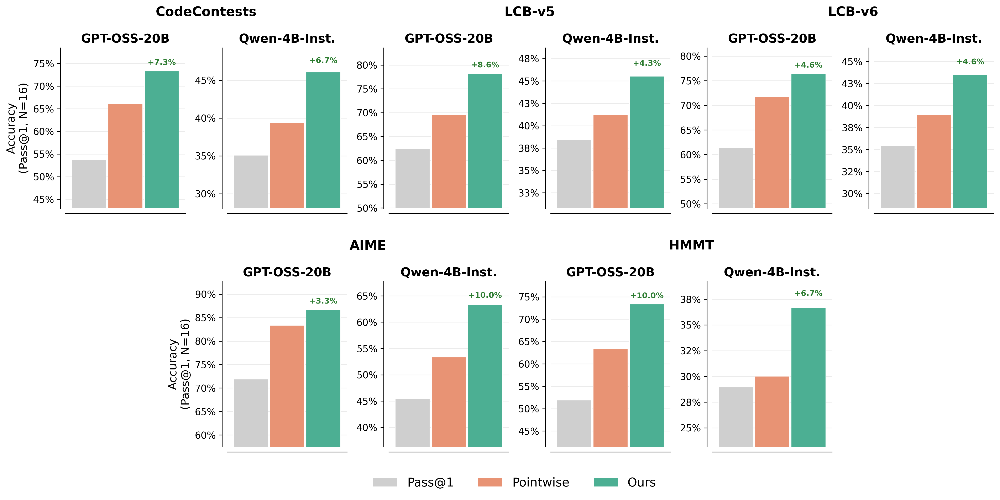
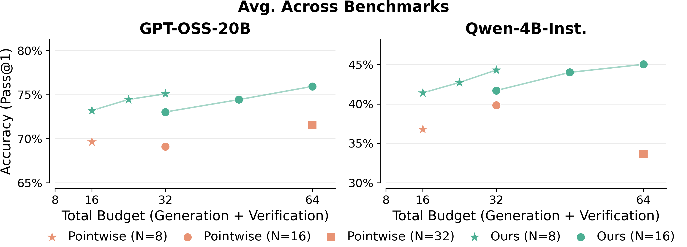
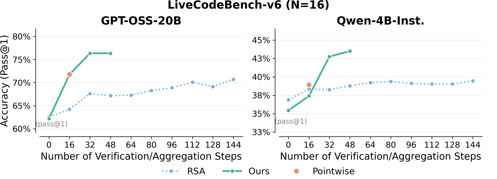
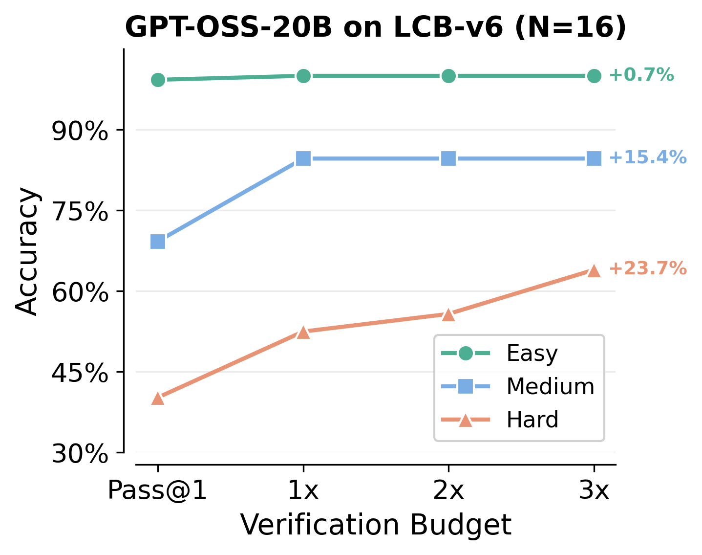
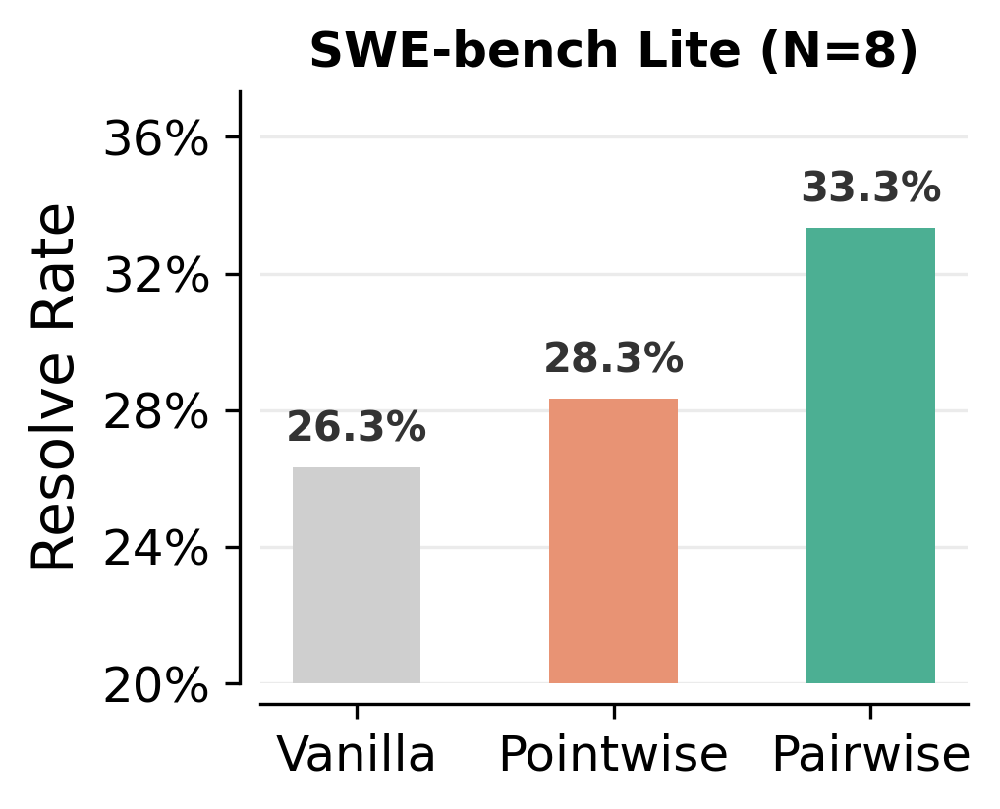
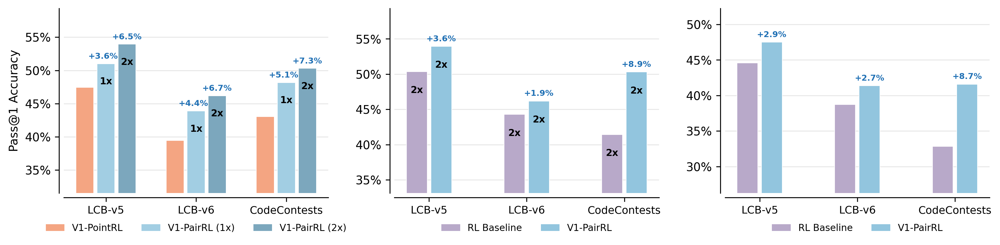
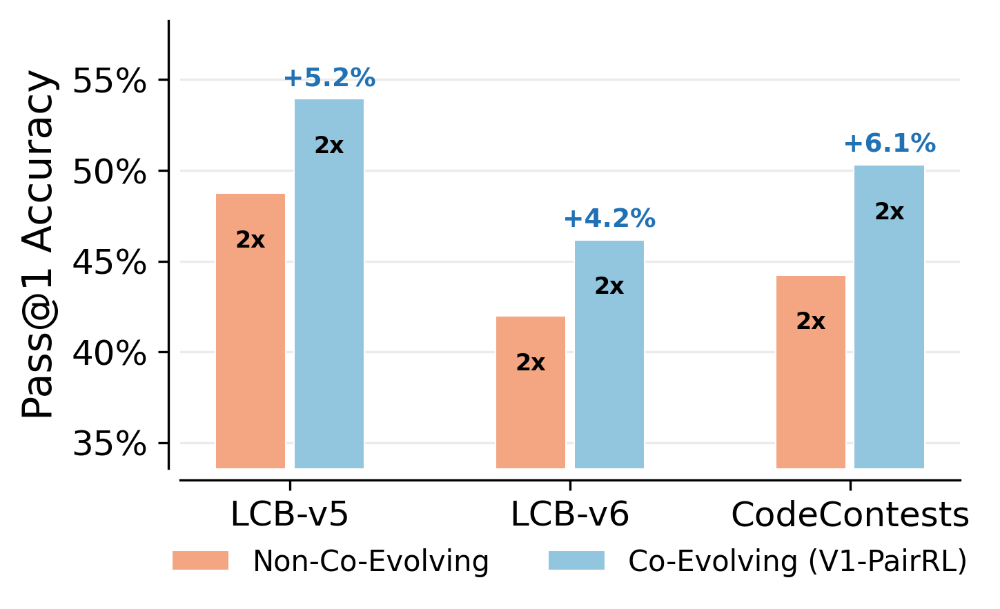

Test-time scaling for complex reasoning tasks shows that leveraging inference compute, by methods such as independently sampling and aggregating multiple solutions, results in significantly better task outcomes. However, a critical bottleneck is verification: sampling is only effective if correct solutions can be reliably identified among candidates. While existing approaches typically evaluate candidates independently via scalar scoring, we demonstrate that models are substantially stronger at pairwise self-verification. Leveraging this insight, we introduce V1, a framework that unifies generation and verification through efficient pairwise ranking. V1 comprises two components: V1-Infer, an uncertainty-guided algorithm using a tournament-based ranking that dynamically allocates self-verification compute to candidate pairs whose relative correctness is most uncertain; and V1-PairRL, an RL framework that jointly trains a single model as both generator and pairwise self-verifier, ensuring the verifier adapts to the generator's evolving distribution. On code generation (LiveCodeBench, CodeContests, SWE-Bench) and math reasoning (AIME, HMMT) benchmarks, V1-Infer improves Pass@1 by up to 10% over pointwise verification and outperforms recent test-time scaling methods while being significantly more efficient. Furthermore, V1-PairRL achieves 7–9% test-time scaling gains over standard RL and pointwise joint training, and improves base Pass@1 by up to 8.7% over standard RL in a code-generation setting.
V1-Infer selects the best solution among N parallel-generated candidates by performing pairwise comparisons instead of independent scoring. It operates in two phases: (1) Topology Coverage, which ensures every solution is compared a minimum number of times via degree-constrained pairing, and (2) Swiss Refinement, which dynamically pairs solutions with similar quality scores to resolve ambiguous rankings. This concentrates the limited verification budget on the most informative comparisons. Scores are aggregated using confidence-weighted win rates derived from the magnitude of rating differences in each pairwise judgment.
V1-PairRL is a unified RL framework that jointly trains a single LLM to be both a strong solution generator and an accurate pairwise self-verifier. The training objective combines a standard GRPO-based generation loss (JGen) with a pairwise verification loss (JPairVerif) that rewards the model for correctly rating pairs of its own solutions. Critically, V1-PairRL uses an online co-evolving setup where verification training data comes from the model's own current-iteration rollouts, ensuring the verifier always trains on in-distribution data as the generator improves.
Pointwise self-verification suffers from calibration collapse. Standard pointwise verification assigns scalar scores to solutions in isolation. This approach is fundamentally limited by the lack of a comparative reference set. Absolute scores lack a globally comparable scale, leading to high variance and poor cross-context calibration, often over-scoring plausible but incorrect solutions. Pairwise judgments simplify the task to a well-posed relative comparison, yielding significantly higher top-1 self-ranking accuracy.
Self-aggregation leads to reduction in Pass@N and diversity collapse. Self-aggregation based methods prompt the same LLM to consolidate parallel solutions into one. While they can improve Pass@1, they may lead to diversity collapse: the Pass@N score (representing the probability that at least one correct solution exists among N candidates) monotonically decreases as aggregation steps increase for Recursive Self-Aggregation (RSA). This indicates that RSA frequently discards or degrades correct outlier solutions during refinement.



V1-Infer consistently outperforms pointwise self-verification across all benchmarks and models at N=16 candidate solutions. On code generation, V1-Infer achieves gains of +7.3% on CodeContests (GPT-OSS-20B), +8.6% on LiveCodeBench-v5, and +4.6% on LiveCodeBench-v6. On math reasoning, gains reach +10.0% on both AIME (Qwen3-4B-Instruct) and HMMT (GPT-OSS-20B).

Budget efficiency. V1-Infer consistently outperforms pointwise self-verification at equivalent total budgets (generation + verification calls) and shows monotonic performance scaling with compute. Even V1-Infer with N=8 outperforms Pointwise with N=16 at comparable budgets, demonstrating superior compute efficiency.

Comparison with Recursive Self-Aggregation (RSA). On LiveCodeBench-v6 (N=16), V1-Infer achieves higher accuracy with fewer model calls compared to RSA. While RSA accuracy plateaus or degrades with additional aggregation steps due to diversity collapse, V1-Infer scales monotonically with verification budget.

Pairwise verification provides the most significant improvements on harder problems. On hard problems in LiveCodeBench-v6 (GPT-OSS-20B, N=16), pairwise verification with 3x budget achieves +23.7% improvement over Pass@1, compared to +15.4% on medium and +0.7% on easy problems (which are already near ceiling at 96%).

V1-Infer generalizes beyond competitive programming and math to real-world software engineering tasks. On SWE-bench Lite (300 instances, 8 candidates, Gemini 2.5 Flash), pairwise verification achieves a 33.3% resolve rate, outperforming pointwise (28.3%) and vanilla Pass@1 (26.3%). Notably, the verifier uses only issue descriptions and patch diffs, with no access to repository context or agent trajectories.

V1-PairRL jointly trains a single model as both solution generator and pairwise verifier using reinforcement learning. This co-evolving training yields three key benefits:

An important ablation compares co-evolving V1-PairRL (where verification data comes from the model's own current rollouts) with a non-co-evolving variant (where verification is trained on fixed, offline data). Co-evolving training consistently outperforms across all benchmarks, with gains of +4.2% to +6.1%, confirming that keeping the verifier in-distribution with the generator's evolving output is crucial.
